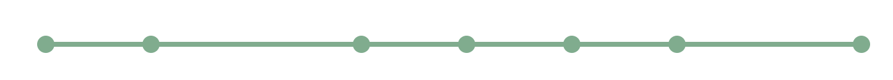
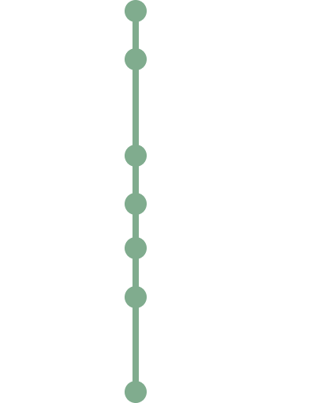
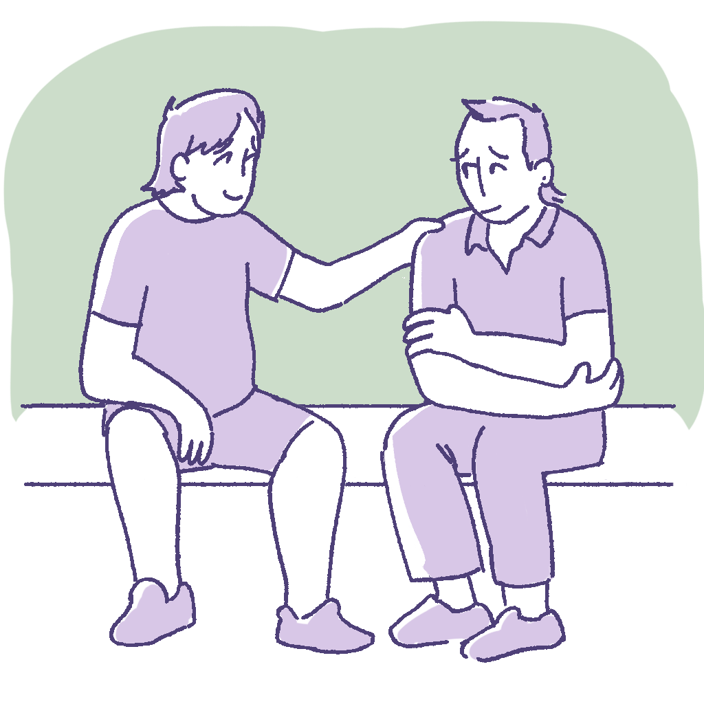
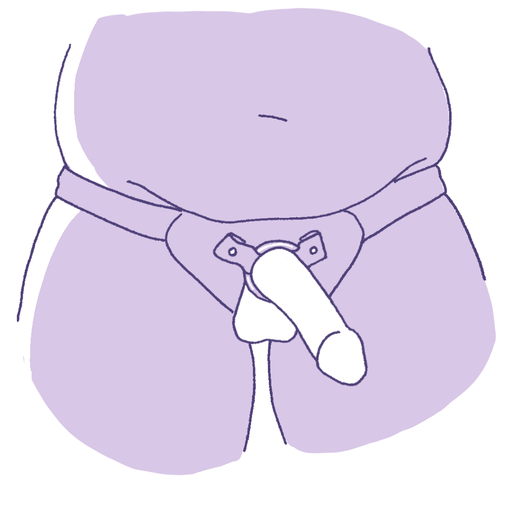
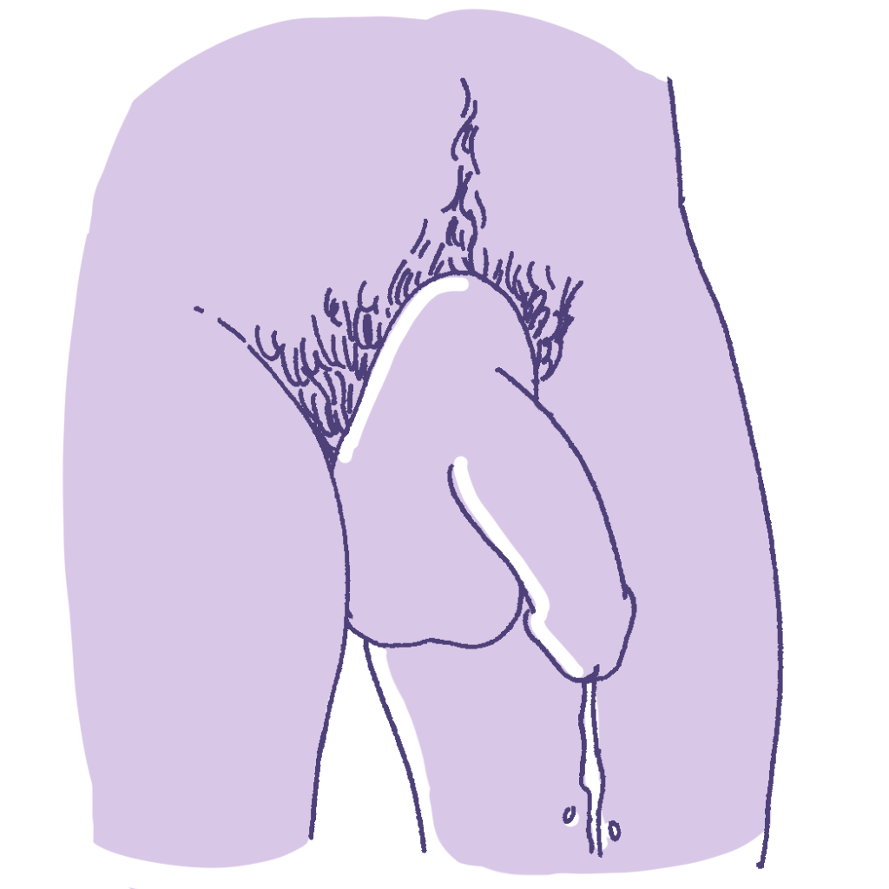
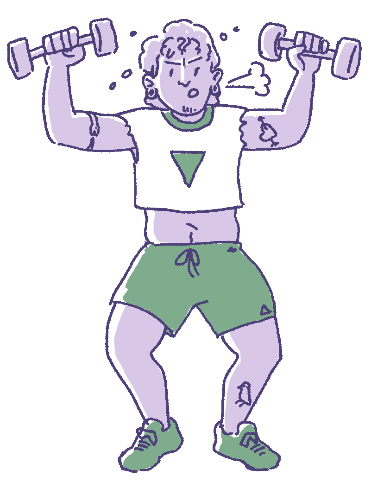
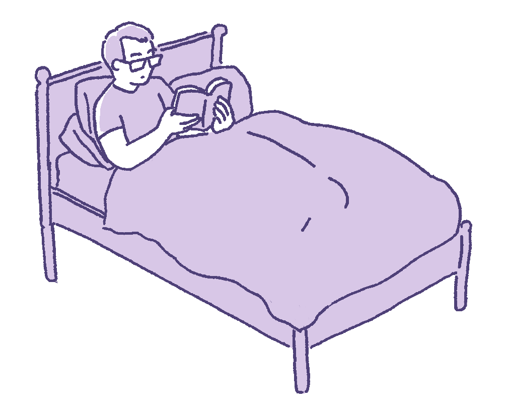
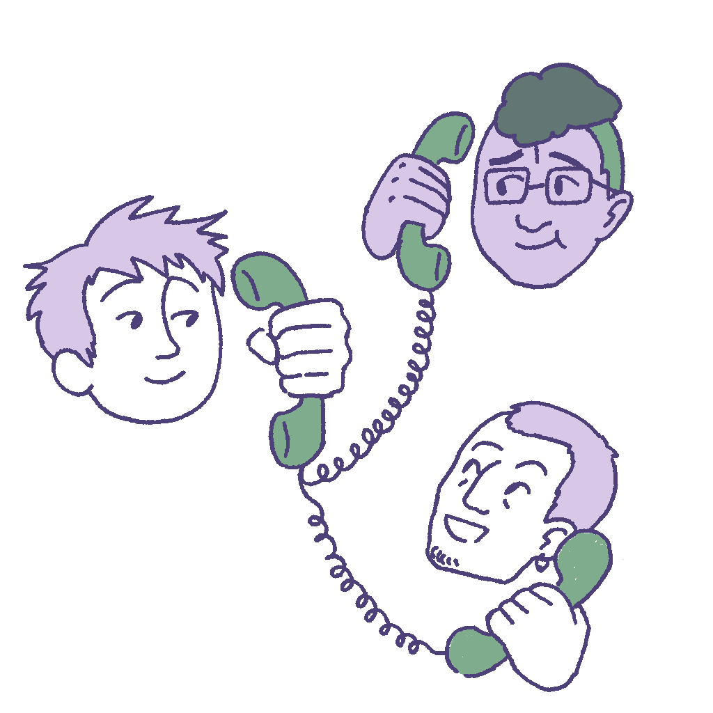
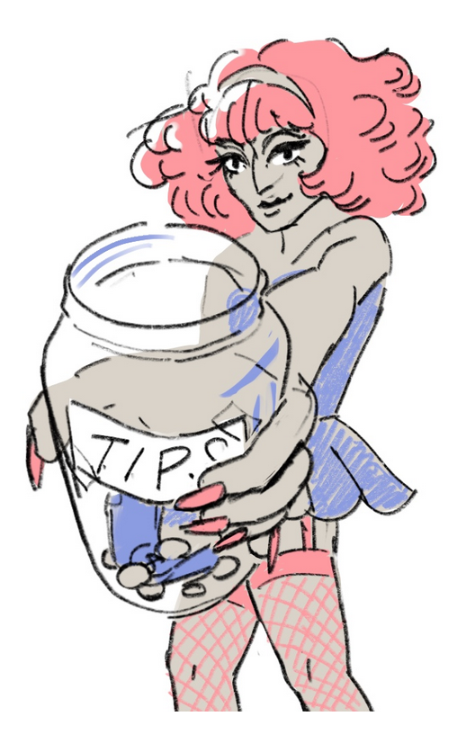

While You Wait
This page is a 22-minute read.
In the years, months, and weeks leading up to surgery, there are many steps you can take to prepare. This page will review what you can do to prepare your mind, body, space, and finances before you have meta. Preparation can be hard work. Be compassionate to yourself, even if you can’t achieve all of these tasks.
Timeline
Everyone’s surgical journey is different, but some things stay consistent. Here are a few of the major steps that you can expect:


Prepare Your Mind
Waiting to receive meta may bring up many positive emotions, like excitement about your post-op body and gender affirmation. At the same time, surgery can be mentally and emotionally challenging, even when it’s a procedure you’re excited to get. There are many steps you can take in both the short and long term to prepare for mental and emotional challenges.
Remember that fear and doubt are normal feelings. It’s okay to be unsure about meta, afraid of what it might entail, and anxious about the future. These feelings do not necessarily mean you should not get the surgery. You should still acknowledge them and listen to them.

On feelings of doubt before surgery:
“I’ve had a lot of trepidation as to whether or not meta is something I really want to go through with, because I’ve already changed up my body so much. One more surgery under the belt isn't much, but it's still a major surgery for what I perceive as such little change. At the same time, it will probably be pretty revolutionary to have my body lining up a little bit closer with how I feel about it. There's been a lot of back and forth. Do I want this? Do I want to have to do the recovery again? Grappling with that has been difficult. But you'll know your body better than anyone else will. If in imagining yourself with the body that you dream, if it lines up with the surgery that you are having, that's more than enough.”
- Pre-op patient
Having emotional support before, during, and after surgery is essential. Whether you’re just considering meta or you have a planned surgery date, it’s a good idea to establish or strengthen your support network to help you throughout your surgical journey. Your network may include friends, family, partners, counsellors, therapists, religious or spiritual leaders, or any other trusted person who provides you with regular support. You cannot do this alone.
Mental Health
Here are some questions to ask yourself about your mental health around surgery:
Before Surgery
- Are there any mental health programs (e.g. community support groups) that I can join to better handle my emotions around surgery?
- How can I set realistic expectations for the results of my surgery?
- Who do I want to tell about my plans for surgery, and how do I want to tell them?
- What can I do to manage my current mental health to set myself up well for recovery?
During Surgery
- How can I cope with anxiety when I’m in the hospital?
- Who will support me on the day of my surgery? (i.e. drive me home, help me get set up)
After Surgery
- What actions can I take to support myself if I’m feeling post-op depression?
- Who can I get in touch with for emotional support during my recovery?
- How can I handle feelings of frustration, anxiety, boredom, or uneasiness during recovery?
- Can I plan phone calls or text check-ins during my recovery so I have a guaranteed form of support?
It is very common to feel anxious about surgery, even when you know it’s the right choice for you.
On pre-op anxiety:
“You can get trapped in cycles of repetitive thought, where your brain goes to one thing, and then you think But what if this happens? and That's why this is going to happen. To escape those fears, I remind myself that surgeons are incredibly well-trained individuals. They're held to a very high code of ethics and very high standards. We go through all these appointments with the express purpose of making it as safe as possible for us to undergo these surgeries.
Obviously, there's situations where things could go wrong, but we have access to a very high standard of care. It's very important to remind yourself of that, especially if you have a lot of anxiety around going under the knife.”
- Pre-op patient
Managing Dysphoria
While you’re waiting for surgery, you may feel more gender dysphoria. Handling dysphoria looks different for everyone, but here are some strategies you can try:
-
Prosthetics. Using a prosthetic may help with sexual and non-sexual bottom dysphoria. Some options are:
Strap-on dildos

Packers
Stand-to-pee devices

-
Wearing briefs or boxers (including packing boxers)
-
Taking measures to increase bottom growth (NOTE: not all of these are effective. Talk to your healthcare provider if you have concerns)
-
Look back to healthy coping mechanisms you used for chest dysphoria before top surgery
-
Talking to a counselor or therapist
-
Talking to a friend or partner
-
Talking to trans friends or mentors
-
Journaling
-
Drawing, making music, and other creative activities
-
Guided meditation and grounding exercises
-
Physical exercise
Finding Support
Having emotional support before, during, and after surgery is essential. Whether you’re considering meta or you already have a surgery date, it’s a good idea to strengthen your social support network. Your network may include friends, family, partners, counsellors, therapists, religious or spiritual leaders, or any other trusted person who provides you with regular support.You can't do this alone.
Many people have a low mood for a while after surgery. No matter how sure or excited you feel about having meta, recovery can still be emotionally challenging. It’s normal to feel worse before you feel better.
Preparing yourself for negative post-op emotions can make it easier to cope with these feelings. Consider these questions, and share this information with your support network:
-
What does it look like when you start to feel low?
-
How will people know that you’re feeling that way?
-
How do you like to be supported when you feel that way?
Other ideas for seeking support
-
Join peer and community support groups
-
Connect with others who have had this surgery (online and in-person)
-
Pre-plan appointments before and after surgery with your mental health provider
-
Plan meaningful, low-energy activities for recovery: arts & crafts, reading, journaling, gaming, or ceremonial practices (i.e smudge or dry brushing)
-
Plan personal meaningful activities- arts, crafts, sketching or ceremonial practices (i.e smudge or dry brushing)
-
Watch other people’s surgery vlogs and read surgery stories online
-
Write yourself a letter with words of encouragement for when you are feeling down
-
Make video or audio diaries of yourself in the weeks leading up to surgery to remind yourself why you want it and why it’s worth it
Logistical Support
It can be very helpful to have someone to support you as you navigate the logistics of surgery, like paperwork and time off from work or school. One pre-op patient shared his experiences with this:
On the importance of social support:
“I'm autistic, and I have somewhere between level 1 and 2 support needs. I rely a lot on my mother to provide certain things for me. It's been very helpful to have someone who's in my corner to help prepare for surgery. Not everybody has a mother who's as in their corner as mine is, but even if you have a roommate, a sibling, or someone in your life that isn't related to you; if you can make arrangements to be with them for a while, and to have them go over all your paperwork and all of your information with you, it helps tremendously, even if you don't have higher support needs.”
- Pre-op patient
Prepare Your Body

To prepare for surgery, working towards your best physical, emotional, mental, and social health can help achieve the best possible outcome. By working on your physical health, you are reducing your risk for post-operative complications. It’s never too late to start working on your physical health by taking these steps.
Quit Smoking
Stopping smoking both nicotine and cannabis products is essential for surgery. There’s no doubt about it: this is tough. There are strategies that can help, though. If you rely solely on willpower, you will have a harder time quitting. You can use supports like patches, gum and mints, hypnotherapy, and talk therapy. Once you have picked your date to quit, add it to your calendar!
Other strategies you might want to try:
- List your reasons to quit
- Tell people you’re quitting
- Use stop-smoking aids
- List your smoking triggers
- Keep cravings away by keeping busy
- Exercise away the urge
If you’ve quit before, try to remember what worked. If you live in Canada, these are some organizations that can help you quit:
- Smoke Break (resources designed for 2SLGBTQ+ Canadians specifically)
- CAMH Nicotine Dependence Clinic
- STOP on the Net
Avoid Substance Use
You should avoid using substances regularly before surgery. That’s because mind-altering substances can interfere with your body’s ability to heal. You should avoid...
- Alcohol for at least a week before surgery
- Cannabis for at least 6 weeks before surgery (3 months if smoking)
- Shrooms, methamphetamines, cocaine, or heroin for at least 6 months before surgery
If you need help avoiding these substances, you can talk to your PCP. If you live in Ontario, there are some other resources you can access:
- CAMH Rainbow Services (2SLGBTQ+): treatment and services for 2SLGBTQ+ people concerned about their drug and alcohol use
- Rapid Access Addiction Medicine clinic: mental health and addiction services via St. Joseph's Hospital
- Connex Ontario: database of mental health and addiction services in Ontario
- Youthline: support hotline for 2SLGBTQ+ people 29 and younger
If you have struggled with addiction before, you are not alone. If you are anxious about using pain medications and potentially relapsing during recovery, you can talk to your care team at WCH. They will help you find ways to manage pain without putting you at risk.
On pain management:
“Taking care of your body, resting up as much as you need, those are the best strategies you can use when preparing for surgery. But there's some times where you're in pain where you turn to non-functional methods of coping. I've struggled with some drug addiction in the past, which, in the lead-up to surgery, knowing that I am most likely going to be on opiate medications is a little bit frightening. But I have a trusted person in my life who will help me get through that, even if I do have the temptation to potentially use and/or abuse the medication I'm prescribed.”
- Pre-op patient
Eat Healthily
Healthy eating differs for everyone. The goal of eating healthy is for you to be well nourished, feel well, and not have any nutritional deficiencies. Eating healthy will help you heal after surgery. Here are some nutrients you’ll need to eat more of before surgery:
- Protein - found in meats, fish, nuts, dairy, beans
- Zinc - found in whole grains (oats, brown rice, quinoa), spinach, nuts
- Vitamin A - found in carrots, broccoli, eggs
- Vitamin C - found in citrus fruits, strawberries, peppers
Don’t forget to drink enough water, too. Your urine should be clear or light yellow.
Nutrition can be complicated to learn about, and you may want to talk to a dietician to help you make healthy choices. If you live in Canada, you can find a dietician through this directory: Find a Dietitian.
You can also find resources on nutrition at Nutrition Prescriptions, a repository of nutrition-related patient handouts. You may find these guides helpful:
Stay Active
Recovery is a lot easier if you work on strength and mobility beforehand. If you have a hard time changing positions independently, low body strength, or health conditions that affect your mobility, then you may have a higher risk of complications after surgery. If you have a physical disability, your PCP can help you find ways to stay active that are suited to your abilities.
Fitness
Before surgery, practicing exercises that get your heart rate up can help you regain your stamina while you recover. Things like jogging, dancing, hiking, stretching, rock climbing, cycling, or weight training can help. Anything that gets you moving and brings you joy is a good option. Exercise can help with your mental health and dysphoria, too.
On the benefits of exercise:
“To deal with anxiety about the things I can't control, I usually try to work out or go for runs. I started running before all my surgeries, because the only thing I can do is help my cardiovascular health. Blood flow and vasculature and all of these things are gonna help you recover. I usually train for a race, even if it's just a 10K race. That way, at least I feel like I'm giving my body the best version of itself to try and heal up.”
- Post-op patient
Strength
You can practice certain strength-training exercises that help with getting out of bed and moving around on your own. You should start these exercises at least 2 months before surgery (but even if that time has already passed, it’s not too late to start). Here are some exercises you can try:
- Sit-to-stands & Squats: Strengthens your legs and core. This helps you get in and out of chairs and your bed, as wellas on and off the toilet after surgery.
- Stair Climbing & Walking: Enhances your fitness and lower body endurance, helping you maintain independence and mobility during recovery.
- Upper Body Strengthening (Bicep Curls & Triceps Dips): Supports safe movement in and out of chairs and beds by improving your arm strength.
- Weight Shifting & Balance Work: Prepares you for movements like transitioning between sitting and standing, preventing falls, and improving overall stability.
Get Enough Sleep
Sleep helps reduce swelling and speed up healing. If you improve your sleeping habits before surgery, your body will handle the stress much better. The average person needs 7-9 hours of sleep each night, but as long as you’re getting enough to feel rested, that’s what counts. Here are a few tips for resting well:
- Aim to get 7-9 hours of sleep each night
- Take time at the end of the day to slow down and relax
- Avoid screens for at least an hour before bed and an hour after waking up
- Try guided meditation and/or deep breathing exercises
Some over-the-counter supplements like melatonin and magnesium can help with sleep. Be sure to talk to your PCP before starting new medications.
Manage BMI*
*BMI (Body Mass Index) is a measurement of roughly how much body fat you have. If you have a BMI over 35 or under 18.5, it can impact the results of your surgery and your recovery. If you have a BMI in the higher end of the range, you may heal more slowly and have a harder time with mobility.
The amount of fat you have around your genitals can also impact the appearance of your penis. If you have enough fat tissue on your mons (the area above your vulva), it can cover your penis even after you have meta. You may not be satisfied with your results in that case because your genitals will not look much different than they did before surgery.
If the surgeon says that there needs to be less fat tissue around your genitals, they may suggest you try losing weight. The surgeons are aware that this can be very frustrating and upsetting to hear. Their goal is not to keep you from getting surgery but to help you get the best results for you. You should discuss other options, such as monsplasty, as well as healthy ways to engage in weight loss (if that is your choice).
If you have a significant change in weight while waiting for surgery (after your surgical consultation), please let the TRS team know. You may need another physical exam to plan appropriately for surgery and set expectations for results.
Manage Chronic Conditions
In many cases, you can have meta even if you have a chronic health condition or illness. Before surgery, speak with your PCP about any new or ongoing symptoms that have not yet been investigated or diagnosed. If there has been a big change in your health,like a new diagnosis or chronic illness, tell your surgical team as soon as possible. Your team will assess any new developments to make sure you can still receive surgery.
If you live in Ontario and you need support managing chronic pain before surgery, you might find it helpful to visit the Toronto Academic Pain Medicine Institute (TAPMI), which provides treatment for many chronic pain conditions. Discuss with your PCP if you need a referral to TAPMI.
On pre-op health conditions:
"While I was getting all my information squared away for my metoidioplasty, I learned that I will have to go off of my ADHD medication for the surgery. That's going to be difficult for me because I’ve been on it every single day since grade eight. But the hospital was very informative and told me everything that will happen if I stay on the medication. So, I'm thinking about the risks and benefits so I can make an informed decision on stopping my medication for the surgery.
Be sure to advocate for yourself. Be sure to look into all of the things that you have, like back pain, ADHD, medication you're on, those kinds of things. Because sometimes these things might slip through the cracks, and it's important for you and your doctor to be on the same page about these kinds of things.”
- Pre-op patient
Health Self-Assessment
To self-assess your health and function status before surgery, go through this checklist.
Do you have any of the following challenges with movement or self-care?
- Difficulty standing or walking for long periods (over 30 minutes)
- Difficulty lifting objects
- Difficulty climbing stairs
- Difficulty physically getting out of bed
- Difficulty using the washroom/getting off of the toilet
- Assistance needed for bathing, dressing, or eating
- Use of mobility aids (e.g., cane, walker, wheelchair)
If you answered yes to any of the above questions, please discuss them with your surgical team before surgery.
Other Considerations
If you want to pursue meta and you do not have a PCP (primary care provider), that should be your first step. A PCP can help you through a lot of the pre-surgery preparation.
You may want to get a hysterectomy before getting meta. A hysterectomy, sometimes shortened to “hysto”, is a surgery that removes your uterus. This surgery is required if you want to get a vaginectomy. Read more about hysterectomies.
Prepare Your Space

Think about the tasks you do every day to care for yourself. Things like getting dressed, showering, preparing food, and cleaning around the house. These tasks are harder than usual during recovery, but there are plenty of ways to set up your space for smooth recovery. Keep reading to learn more.
Think about preparing your space as if you’re taking care of your future self. Your top priorities should be:
- Clean up your space.
- Stock up on groceries and other necessities.
- Prepare easy-to-reheat meals.
- Gather entertainment.
If you have a hard time getting motivated to clean, try asking a friend to come sit in the space with you while you work. This strategy is called “body doubling”, and many neurodivergent people find it helps them focus.
Things to Do
Prepare your home
- Clean and tidy your home
- Vacuum, wipe down surfaces, and declutter walking paths
- Wash your sheets and make your bed
Prepare your clothes
- Do your laundry
- Prepare clean clothes and towels for at least a week
- Set out comfy, loose-fitting clothing
Prepare your meals
- Do your grocery shopping
- Stock up on quick, healthy snacks
- Prepare and freeze meals
Prepare your meds
Refill prescription medication to last at least a week
Prepare your comfort
- Place devices and chargers near your bed
- Prepare low-stress activities
- Make sure you have any comfort items on hand
Prepare your loved ones
Arrange childcare or pet care if needed
Arrange Your Support

Recovery from surgery is physically and emotionally demanding. These demands are made easier when you have help from loved ones. If you arrange support before surgery, you guarantee an easier recovery afterwards.
Your support system can help you with:
- Transportation: Taking you to and picking you up from the hospital, helping you get to follow-up appointments.
- NOTE: You must have someone pick you up from the hospital after surgery at WCH.
- Food: Grocery shopping, meal preparation, kitchen cleanup.
- Hygiene/wound care: Helping you to the bathroom, showering, and simple wound care.
- Supplies/errands: Picking up medications and other household items.
- Household chores: Laundry, housecleaning, garbage disposal, mail, plant care.
- Dependent care: Childcare, pet care, or other responsibilities.
- Companionship: Keeping you company so you are not isolated during recovery.
If you live alone, think about spending your recovery with a support person. That person can stay with you or you can recover at their house.
Your Recovery Space
Explore this interactive apartment for ideas about setting up your recovery space.
Prepare Your Finances
The cost of metoidioplasty is covered by government funding (OHIP, UHIP) for residents of Ontario. Schedule an appointment with your primary care provider to discuss your interest in TRS. During these TRS planning visits, they will explain how funding works for surgery. For more information, read the Government of Ontario page on gender-confirming surgery.
TRS planning visits can take place with a primary care provider, or with a specialist (i.e. endocrinology, psychiatry, specialized clinic) depending on your needs and local resources.
After getting meta, it’s possible you may need revisions. Revisions are extra surgeries to fix something from a previous surgery. For example, closing up a wound that has re-opened. Revisions may or may not be covered by OHIP or UHIP. Consult with your surgeon for specific details.
If you have a hard time getting motivated to clean, try asking a friend to come sit in the space with you while you work. This strategy is called “body doubling”, and many neurodivergent people find it helps them focus.
For WCH patients, this is what you can expect to be funded:
Surgery |
Is it funded? |
|---|---|
| Metoidioplasty | Yes |
| Revisions for complications (e.g. fistula repair) | Yes |
| Cosmetic revisions | No |
| Planned second stage (e.g. testicular implants) | Yes (not considered cosmetic) |
Recovery Funding
The cost of surgery includes the cost of your recovery time, when you’ll be unable to work. It’s a good idea to prepare for these costs in whatever way you can. There are steps you can take to handle the financial aspects of surgery and recovery.
Disability insurance: if you have a job with short- or long-term disability insurance, they may cover paid time off for recovery from surgery. While some of these forms may be daunting, you’re not alone. Your primary care provider may be able to help navigate some of these forms, and the WCH surgical team can help fill in any surgical information.
Costs to Consider
Make sure you’re prepared to handle the cost of necessities during your recovery:
- Rent/mortgage
- Food
- Phone and other utilities
- Other bills (credit cards, insurance premiums, etc.)
- Medications and medical supplies
- Travel and accommodation
- Costs for your support person (and their travel and accommodation costs)
- Childcare/pet care costs (if applicable)
Funding Ideas

One great way to organize funds for your surgery is to reach out to your community. See if your friends can help you set up a fundraiser through skill-sharing, selling creations, or putting on a show. There may be local peer support groups that organize surgery funds.
The trans community is great at caring for each other. Ask people in your community and contact local groups to see if you can get some support in setting up a fundraiser. Don't be afraid to get creative!
A few fundraising ideas:
- Turning an event like a birthday party into a fundraiser (funds in lieu of gifts)
- GoFundMe/online fundraising
- Mutual aid drag show